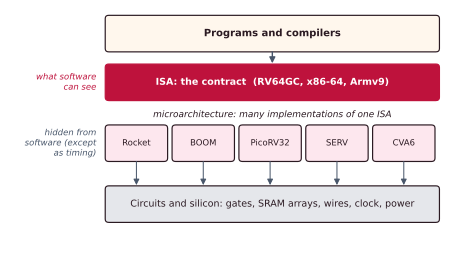
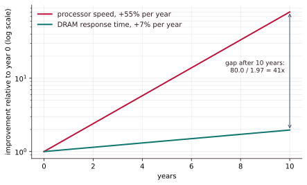
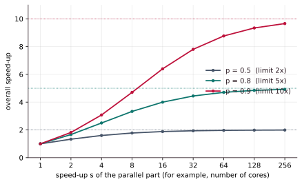

Chapter 1: The Layer Under the Instruction Set¶
This chapter draws the map. It separates the instruction set, which is a contract, from the microarchitecture, which is one way of keeping it; it introduces the Iron Law of performance, the one equation against which almost every design decision in the book can be scored; and it names the three kinds of parallelism and the three walls (memory, Amdahl's law and power) that shape every modern processor. If you remember only this chapter's equations and the reasons behind the walls, you will understand why the later chapters contain what they do.
1.1 The contract and the implementation¶
The instruction set architecture, or ISA, is the visible interface between software and hardware. It names the registers a program can use, the instructions it can issue and how they are encoded, the rules of the memory model, and what happens on exceptions and at different privilege levels. A compiler and an assembly programmer target the ISA and nothing below it.
The microarchitecture, sometimes called the organisation, is everything below that contract: how many steps an instruction takes, how many instructions start in one cycle, the buffers that hold instructions in flight, the caches, the branch predictors, the execution units. A correct program must never depend on any of it for its result. It may depend on it only for its speed.
Definition: ISA and microarchitecture
The ISA is the architectural state and behaviour a programmer can rely on (for example RISC-V RV64GC, x86-64 or Armv9). A microarchitecture is one particular way of building hardware that obeys that ISA. One ISA, many microarchitectures.
A useful picture is a restaurant chain that prints one menu. A diner can order any dish on it and knows what will arrive. But one branch has two cooks and a small stove, and another has twenty cooks, three ovens and a prep line. Same menu, same dishes, very different speeds. The menu is the ISA; the kitchen is the microarchitecture.

The power of this separation is that the same program file runs on very different machines.
| ISA | Some microarchitectures that implement it |
|---|---|
| x86-64 | Intel Skylake, Intel Alder Lake (big and small cores), AMD Zen 4 |
| Arm v8/v9 | Cortex-A53 (small and frugal), Cortex-A76 (big and fast), Apple's M-series cores |
| RISC-V | PicoRV32 (tiny), Rocket (classic), BOOM (big and fast), CVA6 |
Every design in a row runs the same binary, at very different speeds, sizes and power budgets. The ISA is fixed; everything in this book is about the freedom left underneath it.
| Concern | ISA (architecture) | Microarchitecture |
|---|---|---|
| Visible to programs? | Yes, it is the contract | No, except through timing |
| Defines | Registers, instructions, memory model, traps | Pipeline, caches, predictors, reorder buffer, execution ports |
| Changes | Rarely; stable for decades | Every product generation |
| Affects | Whether the answer is correct | Only speed, power and area |
The last row is a promise: a correct program gets the same answer on every microarchitecture. But note the words "except through timing" in the first row. Timing is the one thing about a machine that a program can always observe, and Chapter 10 shows how that small gap lets secrets leak.
1.2 The Iron Law of performance¶
What does "fast" mean? It does not mean gigahertz, and it does not mean "instructions per second". It means that your program finishes sooner. The time a program takes depends on three things.
- Instruction count (IC): how many instructions the program executes. It is set by the ISA and the compiler.
- Cycles per instruction (CPI): the average number of clock ticks each instruction costs. It is set by the microarchitecture. Its reciprocal, instructions per cycle (IPC), is often quoted instead: CPI 0.5 is the same as IPC 2.
- Clock period: the duration of one tick, which is \(1/f\). At 4 GHz it is 0.25 ns. It is set by the longest path through the logic and by the process technology.
This is the Iron Law. There are only three levers, and making one better usually makes another worse.
| Push this lever... | ...and this tends to happen |
|---|---|
| Split each instruction's work into more, shorter steps, giving a shorter clock period | More waiting between dependent instructions, so a higher CPI |
| Richer, more powerful instructions, giving a lower instruction count | Each is harder to decode and run, so a longer clock period |
| Much smarter hardware, giving a lower CPI | More chip area and more power |
You cannot optimise one term alone. You optimise the product.
Example 1.1: the slower clock wins
A program executes \(2.0 \times 10^9\) instructions.
Design A: 4.0 GHz, CPI 1.6. The clock period is \(1/4.0\ \text{GHz} = 0.25\) ns. $\(t_A = 2.0\times10^{9} \times 1.6 \times 0.25\ \text{ns} = 0.80\ \text{s}\)$
Design B: 3.0 GHz, CPI 0.9. The clock period is \(0.333\) ns. $\(t_B = 2.0\times10^{9} \times 0.9 \times 0.333\ \text{ns} = 0.60\ \text{s}\)$
B is \(0.80/0.60 = 1.33\) times faster with a clock that is 25% slower. It does more useful work per tick. The clock rate alone tells you almost nothing.
Higher clock speed does not always mean a faster CPU
Around 2000 to 2005, processors chased gigahertz with very long chains of very short steps, and lost to slower-clocked designs that got more done per tick. Judge a chip by how long real programs take.
1.3 Sources of speed: three kinds of parallelism¶
Once the instruction count is fixed by the compiler and the clock is bounded by physics, the CPI term is where architects win. The way to lower CPI is to find parallelism: to do more than one useful thing at a time. There are three kinds.
Instruction-level parallelism (ILP). Independent instructions of a single program run at the same time. A cook overlaps the steps of one recipe: the water boils while the onions are chopped.
Thread-level parallelism (TLP). Separate threads or programs run on separate cores, or interleave on one core. Several cooks each make a different order. A thread is one independent stream of instructions; a program may have one or many.
Data-level parallelism (DLP). One instruction applies the same operation to many numbers at once. One chop of a wide knife cuts ten carrots. Vector units and GPUs are the home of DLP.
There is only so much independent work inside one instruction stream, so ILP eventually runs out. The industry's route to more performance followed the techniques in the order in which each one hit diminishing returns:
| Stage of the road | Idea | Parallelism | Where in this book |
|---|---|---|---|
| Pipelining | Overlap the stages of consecutive instructions | ILP | Chapter 2 |
| Out-of-order and superscalar | Reorder, and issue several independent instructions per cycle | deeper ILP | Chapter 3 |
| Multicore and SMT | Many cores, many threads | TLP | Chapters 3 and 5 |
| SIMD and GPUs | One operation over many data lanes | DLP | Chapter 8 (the RISC-V vector extension) |
1.4 Wall one: the memory wall¶
For decades processors got faster by about 55% a year, while the response time of main memory improved by about 7% a year. Today one trip to main memory takes about 100 ns, in which a core could have run hundreds of instructions. This growing gap is the memory wall.
The numbers compound quickly. If both rates held for ten years, processor speed would have grown by \(1.55^{10} \approx 80.0\) times and memory response by \(1.07^{10} \approx 1.97\) times. The gap would be \(80.0/1.97 \approx 41\) times, and after twenty years \((1.55/1.07)^{20} \approx 1\,656\) times.

Small, fast memories near the core (caches, Chapter 4) and cores that find other work while they wait (out-of-order execution, Chapter 3) exist largely to hide this gap. Picture a chef who can chop in seconds but whose ingredients come from a warehouse across town. Without a fridge in the kitchen, the chef mostly waits.
1.5 Wall two: Amdahl's law¶
Speed up part of a job, and the part you did not speed up becomes the limit. If a fraction \(p\) of the work is made \(s\) times faster, the overall speed-up is
The \((1-p)\) part never gets faster, so it sets a ceiling of \(1/(1-p)\) however large \(s\) becomes.
Example 1.2: where is the ceiling?
Ninety per cent of a program can run in parallel, so \(p = 0.9\).
With an 8-fold speed-up of that part: $\(\frac{1}{0.1 + 0.9/8} = \frac{1}{0.1 + 0.1125} = \frac{1}{0.2125} \approx 4.7\)$
With infinitely many cores the parallel term vanishes and the speed-up is \(1/0.1 = 10\), never more.
Now take \(p = 0.5\). The ceiling is \(1/0.5 = 2\), and no number of cores gets you past it.

The lesson is to speed up the common case, and never to forget the stubborn remainder.
1.6 Wall three: the end of Dennard scaling¶
For about thirty years, smaller transistors also needed less voltage, so chips could be clocked faster at the same power per square millimetre. This was Dennard scaling. The power a chip burns while switching is roughly
(capacitance, voltage squared, frequency; a more complete form carries an activity factor \(\alpha\) for the fraction of the circuit that switches each cycle). Around 2005 the supply voltage stopped falling, because of leakage. From then on, raising \(f\) meant melting the chip: the cost is steep, since power rises with frequency and, if the voltage must rise to support the frequency, with the square of the voltage too. Clock rates stalled at a few gigahertz.
Example 1.3: what a voltage cut buys
At a fixed frequency, lowering the supply voltage by 10% multiplies dynamic power by \(0.9^2 = 0.81\), a saving of 19%. Lowering both voltage and frequency by 20% multiplies it by \(0.8^2 \times 0.8 = 0.512\): half the power for four-fifths of the clock.
Transistors kept getting smaller and cheaper, but could no longer be spent on a faster clock. They were spent on more cores, which runs straight into Amdahl's law. This is why the industry went multicore around 2005, shifting the burden of performance onto software parallelism. Today the frontier is energy per operation and specialisation (GPUs and other accelerators), not raw clock speed.
1.7 Measuring honestly¶
To compare microarchitectures fairly you need honest metrics, and several popular ones mislead.
IPC compares designs only when they run the same ISA and the same program file. MIPS, millions of instructions per second, misleads: a machine that runs many simple instructions can post a big number while finishing the job later. Its nickname is the "Meaningless Indicator of Processor Speed". The fair answer is a benchmark: a fixed set of real programs, timed end to end. SPEC CPU is the industry's standard set, and CoreMark and Embench are popular for small cores. Chapter 9 is devoted to them. For now, remember one rule: trust wall-clock time on real work. Every other number is a clue, not a verdict.
1.8 A map of the book¶
| Chapter | The question it answers | Iron Law term |
|---|---|---|
| 2. Pipelining and hazards | How do we overlap instructions, and what goes wrong? | CPI and clock period |
| 3. Out-of-order and superscalar | How do we run several at once, in any safe order? | CPI below 1 |
| 4 and 5. Caches, memory and coherence | How do we hide the memory wall and share memory among cores? | CPI (stalls) |
| 6. Interconnect | How do the blocks of a chip talk? | the whole chip |
| 7. Peripheral interfaces | How does a chip talk to the outside world? | the whole system |
| 8. RISC-V cores | What do real designs look like? | all three |
| 9. Benchmarks | How do we compare processors fairly? | measure all three |
| 10. Side channels | How can speed tricks leak secrets? | the price of speed |
| 11. Labs | How do I run and measure real cores? | measure it |
1.9 Summary¶
- The ISA is the contract; the microarchitecture is one way of building it. A correct program gets the same answer on every microarchitecture; only speed, power and area differ.
- The Iron Law: CPU time = instruction count × CPI × clock period. The three levers trade against each other, so it is the product that counts.
- Parallelism lowers CPI: ILP within one instruction stream, TLP across threads and cores, DLP across data.
- Three walls shape every modern chip: the memory wall (processors improved far faster than DRAM latency), Amdahl's law (the unaccelerated fraction caps the speed-up at \(1/(1-p)\)) and the end of Dennard scaling (voltage stopped falling, so dynamic power \(\approx CV^2f\) capped the clock and pushed designs to multicore).
- Measure with real programs. Gigahertz and MIPS are not performance.
1.10 Exercises¶
Exercise 1.1. Which of the following belong to the ISA and which to the microarchitecture: the number of registers; the size of the fast on-chip memory; how an add instruction is encoded; how many instructions can start each cycle?
Answer
ISA: the number of registers and the encoding of add, because programs depend on them. Microarchitecture: the size of the on-chip memory and the number of instructions that start per cycle, because they change only the speed.
Exercise 1.2. A program runs \(1 \times 10^9\) instructions. Machine A: 2 GHz, CPI 1.5. Machine B: 3 GHz, CPI 2.4. Find the time on each machine and say which is faster, and by how much.
Answer
\(t_A = 10^9 \times 1.5 / (2\times10^9) = 0.75\) s. \(t_B = 10^9 \times 2.4/(3\times10^9) = 0.80\) s. A is faster by \(0.80/0.75 \approx 1.07\) times, although its clock is slower.
Exercise 1.3. A new compiler cuts machine A's instruction count by 20% but raises its CPI to 1.7. Is A faster or slower, and by how much?
Answer
New instruction count \(0.8 \times 10^9\). \(t = 0.8\times10^9 \times 1.7 / (2\times10^9) = 0.68\) s. This is faster than 0.75 s by \(0.75/0.68 \approx 1.10\) times.
Exercise 1.4. Eighty per cent of a job is parallel. What speed-up does Amdahl's law give on 4 cores? On 16? What is the limit? Then compare 16 cores with 4 cores plus a change that halves the serial part.
Answer
Four cores: \(1/(0.2 + 0.8/4) = 1/0.4 = 2.5\). Sixteen cores: \(1/(0.2 + 0.8/16) = 1/0.25 = 4\). Limit: \(1/0.2 = 5\).
Halving the serial part leaves 10% serial and 90% parallel. On 4 cores: \(1/(0.1 + 0.9/4) = 1/0.325 \approx 3.1\). That is less than the 4 given by 16 cores, but it uses a quarter of the cores.
Exercise 1.5. A program is 60% parallel. What is the best speed-up any number of cores can give?
Answer
\(1/(1 - 0.6) = 2.5\).
Exercise 1.6. Machine A executes a job as 2.0 billion simple instructions in 1.0 s. Machine B executes the same job as 1.2 billion richer instructions in 0.8 s. Compute the MIPS of each and say which is faster.
Answer
A: \(2.0\times10^9 / (1.0 \times 10^6) = 2000\) MIPS. B: \(1.2\times10^9/(0.8\times10^6) = 1500\) MIPS. B has the lower MIPS but finishes \(1.0/0.8 = 1.25\) times sooner. MIPS rewarded A for doing more, smaller steps.
Exercise 1.7. If processor speed grows 55% a year and DRAM response time improves 7% a year, by what factor does the gap grow in five years?
Answer
\((1.55/1.07)^5 = 1.4486^5 \approx 6.4\). (Check: \(1.55^5 \approx 8.95\), \(1.07^5 \approx 1.40\), and \(8.95/1.40 \approx 6.4\).)